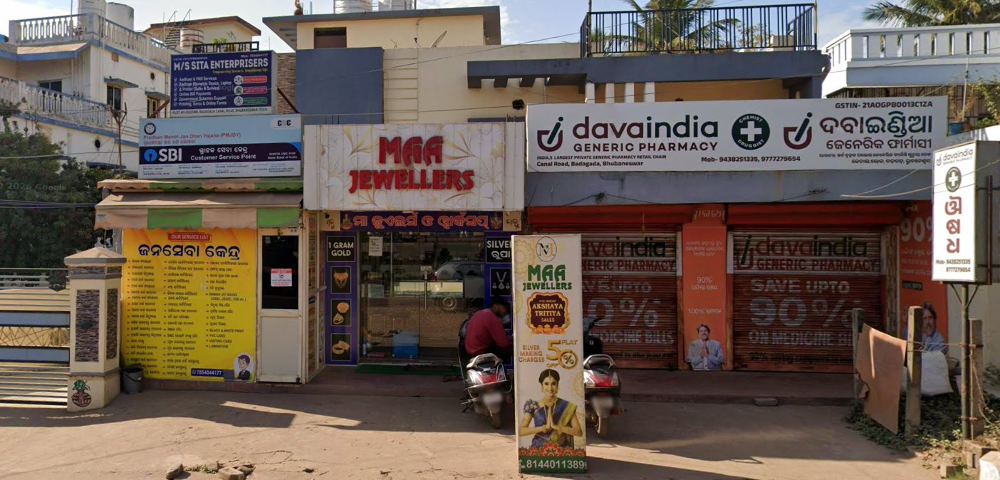
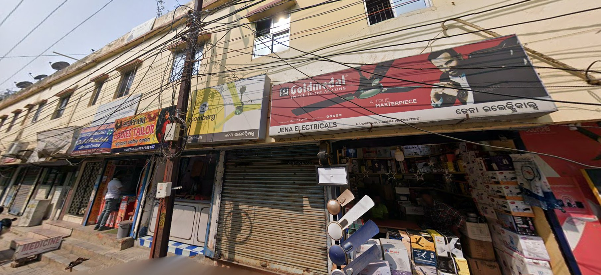
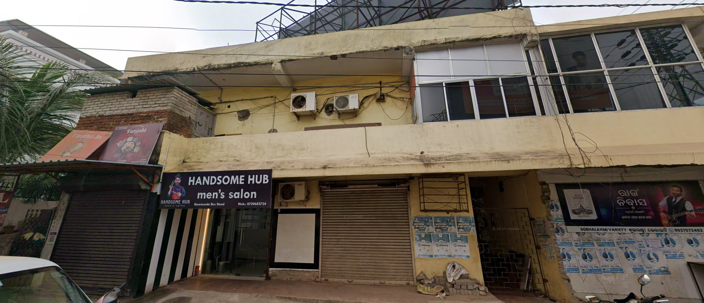
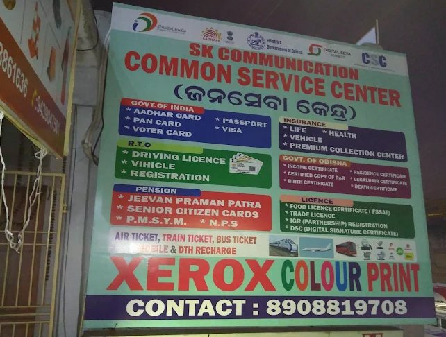
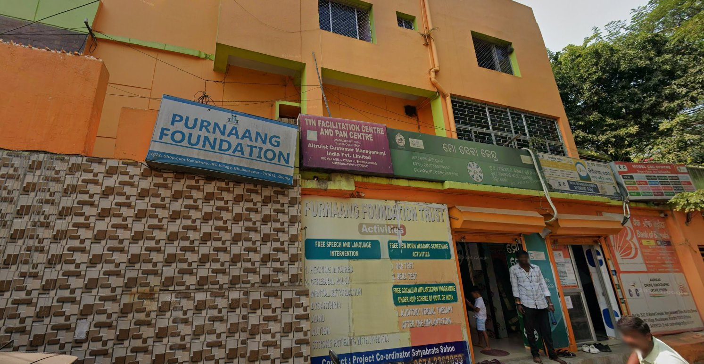
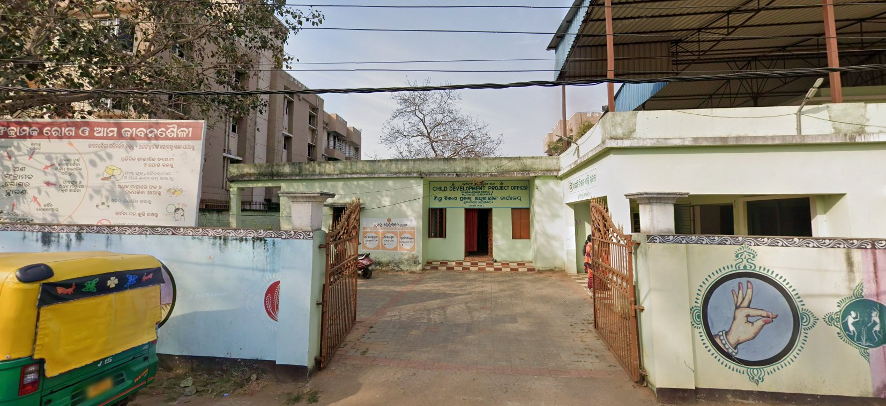

What Is the Subhadra Yojana?
Launched on September 17, 2024 by Prime Minister Narendra Modi, Subhadra Yojana provides ₹50,000 over five years to eligible women in Odisha through Direct Benefit Transfer (DBT) — ₹10,000 per year in two instalments of ₹5,000 each.
Women also receive a Subhadra Debit Card. Those who use it for digital transactions get an extra ₹500 — specifically, the top 100 women in each Gram Panchayat or Urban Local Body who make the most cashless transactions in a year earn this bonus via DBT.
The Odisha Government has allocated ₹55,825 crore for the scheme, running from 2024–25 to 2028–29. This is not a loan. It is free money — transferred directly to your bank account, no middlemen, no interest, no repayment.
Payment Schedule: When Does the Money Come?
The payment schedule gives women predictability to plan spending or savings. These are fixed dates every year — mark them in your calendar.
| Instalment | Amount | Date |
|---|---|---|
| 1st Instalment (2024) | ₹5,000 | Raksha Bandhan — September 17, 2024 |
| 2nd Instalment | ₹5,000 | International Women’s Day — March 8, 2025 |
| 3rd Instalment | ₹5,000 | Raksha Bandhan — August 9, 2025 |
| 4th Instalment | ₹5,000 | International Women’s Day — March 8, 2026 |
| 5th Instalment | ₹5,000 | Raksha Bandhan — August 2026 (expected) |
Am I Eligible? Complete Eligibility Criteria
✅ You ARE Eligible If:
- You are female (only women can apply)
- Age 21 to 59 years (born on/after 02-04-1965 and on/before 01-04-2004 for FY 2025-26)
- Permanent resident of Odisha — not a temporary migrant
- You hold an NFSA or SFSS ration card
- No ration card? Your family income is below ₹2.5 lakh per year
- ASHA workers and Anganwadi workers are eligible (if government income stays below ₹1,500/month)
- Widows who meet all other criteria are eligible
✗ You Are NOT Eligible If:
- You or any family member files Income Tax Returns (ITR)
- You or your husband is a current or retired government employee
- You or family receives pension above ₹1,500/month (₹18,000/year) from any government scheme
- You are an elected representative (MP, MLA, Zila Parishad) — ward members & councillors are exempt
- Family owns more than 5 acres irrigated land or more than 10 acres non-irrigated land
- Family owns a four-wheeler (car/jeep) — tractors and commercial vehicles are exempt
Documents Required for Subhadra Yojana
Bring originals and two self-attested photocopies of each document:
Mandatory for All Applicants
- Aadhaar Card — your date of birth must be clearly recorded; mobile number must be linked for OTP-based e-KYC
- Bank Passbook (first page) — must be a single-holder account in your name only; account must be Aadhaar-linked and DBT-enabled (NPCI mapper active)
- Ration Card / NFSA Card / SFSS Card — primary income proof; bring if you have one
- Passport-size photographs — 2 recent colour photographs
- Mobile number linked to Aadhaar — mandatory for OTP verification during e-KYC
If You Don’t Have a Ration Card
- Income Certificate — issued by the Tehsildar/Revenue Officer showing annual family income below ₹2.5 lakh
- Residence Proof — electricity bill, property tax receipt, or any government document showing your Bhubaneswar address
Additional Documents (If Applicable)
- Caste Certificate — for SC/ST applicants (optional but useful)
- Disability Certificate — for applicants with disabilities
- Husband’s death certificate — for widows
How to Apply: Step-by-Step
There are two methods — offline (recommended for most women) and online. Both are accepted.
Method 1 — Offline Application (Recommended)
- 1Collect the Form — It’s FreeApplication forms are available at Anganwadi Centres, Block Offices, Mo Seva Kendras, and Common Service Centres (CSCs). Do not pay anyone for the form — it is completely free.
- 2Fill the Form Carefully in Capital LettersUse your name exactly as it appears on your Aadhaar card. Do not use nicknames or alternative spellings. The Aadhaar data is considered final by the system.
- 3Attach Self-Attested Copies of All DocumentsSign the consent declaration at the bottom of the form — this is mandatory. Attach two photocopies of each required document.
- 4Submit and Get an Acknowledgement ReceiptSubmit the form at your nearest Anganwadi Centre, Mo Seva Kendra, or CSC. Do not leave without an acknowledgement receipt. This is your proof of submission and your tracking reference.
- 5Complete e-KYCThe centre operator will complete your e-KYC using Aadhaar OTP or biometric face authentication via the SUBHADRA Mobile App. You must self-certify your eligibility during this step.
- 6Wait for Multi-Level VerificationApplications go through verification at the Ward/Gram Panchayat level, then Block/ULB level, and finally district level. This typically takes 15–30 days.
- 7Check Your StatusAfter 15–30 days, check at subhadra.odisha.gov.in using your Application ID and mobile number, or visit the same centre where you submitted.
Method 2 — Online Application
- 1Visit the official portal at subhadra.odisha.gov.in
- 2Click “Apply Now” and enter your Aadhaar number; complete OTP verification
- 3Fill in all personal details — name, address, bank account number, IFSC code
- 4Upload scanned copies of Aadhaar, bank passbook first page, and ration card or income certificate
- 5Preview carefully, then submit. Save your Application Reference Number — this is your tracking ID. Screenshot it immediately.
Where to Apply in Bhubaneswar: Real Centers With Addresses
🏠 Mo Seva Kendra — BMC Ward No. 45, Kalpana Square
⭐ 4.8 / 5 • Open SundaysSunday: 9:00 AM – 3:00 PM

🏠 Mo Seva Kendra — Soubhagyanagar, Baramunda
⭐ 3.7 / 5
🏠 Common Service Centre (CSC) — SK Communication, Baramunda
⭐ 4.2 / 5Sunday: 9:00 AM – 2:00 PM


🏠 Common Service Centre — Jan Seva Kendra, IRC Village, Nayapalli
⭐ 3.5 / 5 (102 reviews)
🏠 CDPO Office / Anganwadi Centres — Bhubaneswar
Most Accessible
Every ward in Bhubaneswar has one or more Anganwadi Centres. These are the most accessible application points — in your neighbourhood, managed by Anganwadi workers who speak Odia, and comfortable for women to visit alone. Subhadra Yojana application forms are distributed free at all Anganwadi Centres. The Anganwadi worker (Sevika) can also help you fill the form.
🎥 Watch: Subhadra Yojana Application Process Explained
This video explains the complete Subhadra Yojana application process in detail — including how to fill the form, what documents to bring, how the e-KYC works, and what to do if your application is rejected. Watching this before your visit will save you a wasted trip.
What to Do If Your Application Was Rejected
Rejection is common — and often fixable. Over 2 lakh women were excluded due to post-disbursal ineligibility verification through the Income Tax Department, Transport Department, and Revenue Department. Here are the most common rejection reasons and what to do about each:
| Rejection Code | Meaning | What to Do |
|---|---|---|
| Income Tax Return | Family member filed ITR | Get a certificate from IT dept confirming no ITR filed; submit appeal at Block Office |
| Government Employee | Applicant or spouse is govt employee | Bring employment certificate confirming private sector/self-employment; submit at Ward Office |
| Four-Wheeler Ownership | Family owns a car/SUV | If vehicle is a tractor or commercial vehicle, bring RC showing vehicle category |
| Land Holding Exceeded | Family owns >5 acres irrigated land | Verify with ROR (Record of Rights) from Tehsildar; if incorrect, submit correction appeal |
| Age Issue | DOB on Aadhaar outside eligible range | Correct your Aadhaar DOB first at UIDAI/Aadhaar centre, then re-apply |
| NPCI Failure | Bank account not DBT-enabled | Visit your bank immediately; ask them to activate NPCI mapper / DBT for your account |
How to File an Appeal
- 1Go to your nearest Block Office or BMC Ward Office with your Application ID, rejection letter (if any), and supporting documents proving the rejection reason is incorrect.
- 2Submit a written appeal and get a written acknowledgement. Keep this safely.
- 3Follow up after 15 days. If no response in 30 days, escalate to the District Collector’s office or call helpline 14678.
How to Check Your Application Status
Important: Watch Out for Fraud
Several fraudsters in Bhubaneswar are charging women money to “help” them apply for Subhadra Yojana or promising faster processing for a fee.
1. The application form is completely free. No one should charge you for it.
2. No agent or broker can speed up your application. Approval depends only on eligibility verification by government departments.
3. Never share your OTP with anyone — not even someone claiming to be a Mo Seva Kendra operator or a “Subhadra helper.” Your OTP is used for Aadhaar verification and must stay private.
If anyone asks you for money to apply, refuse and report to 14678 immediately.
Frequently Asked Questions
Quick Reference: Subhadra Yojana at a Glance
| Feature | Details |
|---|---|
| Launched | September 17, 2024 |
| Implementing Department | Women & Child Development (WCD) Department, Odisha |
| Total Benefit | ₹50,000 over 5 years |
| Annual Benefit | ₹10,000 (two instalments of ₹5,000) |
| Payment Dates | Raksha Bandhan (August) + International Women’s Day (March 8) |
| Eligible Age | 21 to 59 years (as per Aadhaar DOB) |
| Income Limit | NFSA/SFSS card OR family income below ₹2.5 lakh/year |
| Digital Bonus | ₹500 for top 100 digital users per Ward/GP per year |
| Application Form | FREE at Anganwadi, Mo Seva Kendra, CSC, Block Office |
| Official Portal | subhadra.odisha.gov.in |
| Helpline | 14678 (toll-free, Odia & English) |
The scheme is real. The money is real. Over 1 crore women in Odisha have already received it. Don’t miss your eligibility — apply or check your status today.